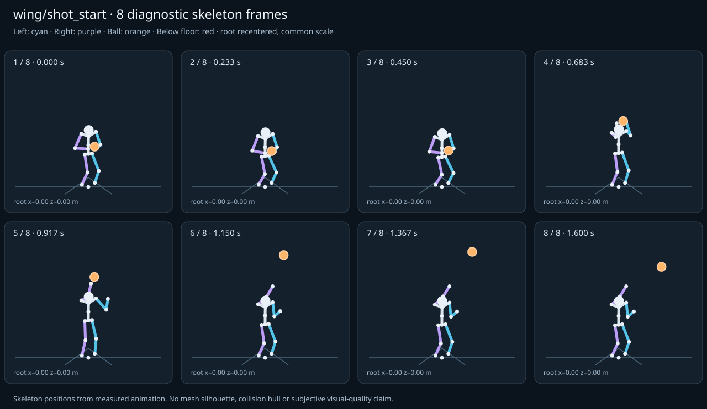

מה הוריד את הציון
- קפיצות פוזה: LeftHand בזמן 0.9167 ש׳; קפיצת סיבוב שקולה 68.7408 מעלות ב־60Hz (אדום)
- כניסה ויציאה מול המתנה: פער ב־יציאה מול המתנה; יחס חריגה 4.2929 (אדום)
כיסוי: 100%. לא כל מדד חל על כל קליפ; הסטטוס והראיות מפורטים למטה.
שמונה פריימים
תצוגת שלד אבחונית שנבנתה מהפריימים הנמדדים. צד שמאל בכחול, ימין בסגול, כדור בכתום. מיקום השורש ממורכז לצפייה; מיקומו בעולם כתוב בכל פריים.

המדדים והראיות
| מדד | מצב | ערך | ציון | סף ופרטי מדידה |
|---|---|---|---|---|
| החלקת רגליים | ירוק | 0 height ratio | 100 | {
"definition": {
"label": "החלקת רגליים",
"unit": "height ratio",
"green": 0.01,
"yellow": 0.035,
"weight": 18,
"description": "Maximum horizontal sole displacement from the first sample of each declared support window, divided by character height. Inferred support is used only when no windows were supplied."
},
"value": 0.00002,
"status": "green",
"score": 99.96,
"evidence": {
"coordinateSpace": "native GLB external Motion node (applied once)",
"supportSource": "declared",
"windows": 2,
"samples": 194,
"maxDriftMeters": 0.000039,
"p95SpeedMetersPerSecond": 0.002273,
"worst": {
"bone": "LeftFoot",
"t": 1.016667,
"start": 0,
"end": 1.6,
"driftMeters": 0.000039
}
}
} |
| חדירה לרצפה | ירוק | 0 height ratio | 99 | {
"definition": {
"label": "חדירה לרצפה",
"unit": "height ratio",
"green": 0.005,
"yellow": 0.02,
"weight": 15,
"description": "Maximum depth of the supplied sole probe points and all skeletal joint centers below the declared floor plane, divided by height. Sole probes are not a mesh collision audit."
},
"value": 0.000141,
"status": "green",
"score": 99.43,
"evidence": {
"samples": 1940,
"floorY": 0,
"probeKind": "declared sole probes plus skeletal joint centers (no mesh surfaces)",
"maxDepthMeters": 0.00028,
"worst": {
"t": 0.783333,
"bone": "LeftFoot",
"depthMeters": 0.00028,
"y": -0.00028
}
}
} |
| קפיצות פוזה | אדום | 5.378 discontinuity ratio | 21 | {
"definition": {
"label": "קפיצות פוזה",
"unit": "discontinuity ratio",
"green": 1,
"yellow": 2.5,
"weight": 18,
"description": "Maximum adjacent 60 Hz-equivalent step: root-relative marker displacement / 0.04 height, root-relative rotation / 15 degrees, or root translation / 0.08 height. A fast continuous action can also exceed this screening threshold."
},
"value": 5.377657,
"status": "red",
"score": 21.22,
"evidence": {
"adjacentPairs": 96,
"observations": 1632,
"maxDegrees60Hz": 68.740818,
"maxMarkerStepHeight60Hz": 0.215106,
"maxRootStepHeight60Hz": 0,
"worst": {
"ratio": 5.377656657234707,
"t": 0.916667,
"previousTime": 0.9,
"bone": "LeftHand",
"markerStepHeight60Hz": 0.215106,
"degrees60Hz": 1.313134
}
}
} |
| חריגות אנטומיות | ירוק | 0 % affected frames | 100 | {
"definition": {
"label": "חריגות אנטומיות",
"unit": "% affected frames",
"green": 0.5,
"yellow": 3,
"weight": 14,
"description": "Percentage of frames with elbow or knee flexion above 165 degrees, neck bend above 80 degrees, or a segment length changing by more than 5%. Optional calibrated hinge checks detect reverse knee flexion above 8 degrees. Conservative marker limits do not diagnose axial joint twist."
},
"value": 0,
"status": "green",
"score": 100,
"evidence": {
"testedFrames": 97,
"affectedFrames": 0,
"checks": 1649,
"maxLimbFlexionDegrees": 141.194184,
"maxRelativeSegmentLengthChange": 0,
"hingeDirectionChecked": true,
"axialTwistChecked": false,
"violations": []
}
} |
| מגע בכדור | ירוק | 0.002 height ratio | 97 | {
"definition": {
"label": "מגע בכדור",
"unit": "height ratio",
"green": 0.015,
"yellow": 0.05,
"weight": 13,
"description": "Maximum absolute distance from the ball surface to the sampled, bone-transformed declared contact point, divided by height. Events are evaluated at their exact declared times by interpolation."
},
"value": 0.001913,
"status": "green",
"score": 97.45,
"evidence": {
"radiusMeters": 0.12,
"samples": 100,
"missed": [],
"contacts": [
{
"t": 0.516667,
"bone": "LeftHand",
"gapMeters": 0.003788,
"signedGapMeters": -0.003788,
"centerDistanceMeters": 0.116212,
"contactPoint": [
0.088948,
1.357784,
0.390068
],
"ballCenter": [
-0.027051,
1.355599,
0.383381
],
"declaredLocalPoint": true
},
{
"t": 0.55,
"bone": "LeftHand",
"gapMeters": 0.00316,
"signedGapMeters": -0.00316,
"centerDistanceMeters": 0.11684,
"contactPoint": [
0.076635,
1.510238,
0.391917
],
"ballCenter": [
-0.04,
1.510091,
0.385
],
"declaredLocalPoint": true
},
{
"t": 0.483333,
"bone": "LeftHand",
"gapMeters": 0.002927,
"signedGapMeters": -0.002927,
"centerDistanceMeters": 0.117073,
"contactPoint": [
0.101561,
1.21165,
0.386502
],
"ballCenter": [
-0.015418,
1.210614,
0.381927
],
"declaredLocalPoint": true
},
{
"t": 0.583333,
"bone": "LeftHand",
"gapMeters": 0.002214,
"signedGapMeters": -0.002214,
"centerDistanceMeters": 0.117786,
"contactPoint": [
0.064671,
1.655835,
0.392561
],
"ballCenter": [
-0.052949,
1.657761,
0.386619
],
"declaredLocalPoint": true
},
{
"t": 0.516667,
"bone": "RightHand",
"gapMeters": 0.002068,
"signedGapMeters": -0.002068,
"centerDistanceMeters": 0.117932,
"contactPoint": [
-0.14468,
1.358648,
0.39126
],
"ballCenter": [
-0.027051,
1.355599,
0.383381
],
"declaredLocalPoint": true
},
{
"t": 0.483333,
"bone": "RightHand",
"gapMeters": 0.001999,
"signedGapMeters": -0.001999,
"centerDistanceMeters": 0.118001,
"contactPoint": [
-0.133304,
1.211832,
0.387003
],
"ballCenter": [
-0.015418,
1.210614,
0.381927
],
"declaredLocalPoint": true
},
{
"t": 0.45,
"bone": "LeftHand",
"gapMeters": 0.001385,
"signedGapMeters": -0.001385,
"centerDistanceMeters": 0.118615,
"contactPoint": [
0.112179,
1.094212,
0.382778
],
"ballCenter": [
-0.00642,
1.094237,
0.380802
],
"declaredLocalPoint": true
},
{
"t": 0.616667,
"bone": "LeftHand",
"gapMeters": 0.001375,
"signedGapMeters": -0.001375,
"centerDistanceMeters": 0.118625,
"contactPoint": [
0.053985,
1.784318,
0.391602
],
"ballCenter": [
-0.064582,
1.785424,
0.388073
],
"declaredLocalPoint": true
},
{
"t": 0.55,
"bone": "RightHand",
"gapMeters": 0.001254,
"signedGapMeters": -0.001254,
"centerDistanceMeters": 0.118746,
"contactPoint": [
-0.158454,
1.511305,
0.393223
],
"ballCenter": [
-0.04,
1.510091,
0.385
],
"declaredLocalPoint": true
},
{
"t": 0.45,
"bone": "RightHand",
"gapMeters": 0.001084,
"signedGapMeters": -0.001084,
"centerDistanceMeters": 0.118916,
"contactPoint": [
-0.125318,
1.094197,
0.382881
],
"ballCenter": [
-0.00642,
1.094237,
0.380802
],
"declaredLocalPoint": true
},
{
"t": 0.583333,
"bone": "RightHand",
"gapMeters": 0.000625,
"signedGapMeters": -0.000625,
"centerDistanceMeters": 0.119375,
"contactPoint": [
-0.172103,
1.655968,
0.393644
],
"ballCenter": [
-0.052949,
1.657761,
0.386619
],
"declaredLocalPoint": true
},
{
"t": 0.65,
"bone": "LeftHand",
"gapMeters": 0.000546,
"signedGapMeters": -0.000546,
"centerDistanceMeters": 0.119454,
"contactPoint": [
0.045867,
1.881223,
0.390451
],
"ballCenter": [
-0.07358,
1.88147,
0.389198
],
"declaredLocalPoint": true
},
{
"t": 0.616667,
"bone": "RightHand",
"gapMeters": 0.000446,
"signedGapMeters": -0.000446,
"centerDistanceMeters": 0.119554,
"contactPoint": [
-0.184057,
1.784236,
0.392242
],
"ballCenter": [
-0.064582,
1.785424,
0.388073
],
"declaredLocalPoint": true
},
{
"t": 0.65,
"bone": "RightHand",
"gapMeters": 0.000236,
"signedGapMeters": -0.000236,
"centerDistanceMeters": 0.119764,
"contactPoint": [
-0.193334,
1.881173,
0.39068
],
"ballCenter": [
-0.07358,
1.88147,
0.389198
],
"declaredLocalPoint": true
},
{
"t": 0.416667,
"bone": "LeftHand",
"gapMeters": 0.000192,
"signedGapMeters": -0.000192,
"centerDistanceMeters": 0.119808,
"contactPoint": [
0.118436,
1.02723,
0.380431
],
"ballCenter": [
-0.001372,
1.027286,
0.380171
],
"declaredLocalPoint": true
},
{
"t": 0.816667,
"bone": "RightHand",
"gapMeters": 0.00018,
"signedGapMeters": -0.00018,
"centerDistanceMeters": 0.11982,
"contactPoint": [
-0.199814,
2.164413,
0.409708
],
"ballCenter": [
-0.08,
2.164016,
0.408611
],
"declaredLocalPoint": true
},
{
"t": 0.416667,
"bone": "RightHand",
"gapMeters": 0.00016,
"signedGapMeters": -0.00016,
"centerDistanceMeters": 0.11984,
"contactPoint": [
-0.121211,
1.027222,
0.380436
],
"ballCenter": [
-0.001372,
1.027286,
0.380171
],
"declaredLocalPoint": true
},
{
"t": 0.85,
"bone": "RightHand",
"gapMeters": 0.000138,
"signedGapMeters": -0.000138,
"centerDistanceMeters": 0.119862,
"contactPoint": [
-0.199859,
2.238474,
0.415698
],
"ballCenter": [
-0.08,
2.238032,
0.415
],
"declaredLocalPoint": true
},
{
"t": 0.783333,
"bone": "RightHand",
"gapMeters": 0.00013,
"signedGapMeters": -0.00013,
"centerDistanceMeters": 0.11987,
"contactPoint": [
-0.199866,
2.080477,
0.402434
],
"ballCenter": [
-0.08,
2.080346,
0.401389
],
"declaredLocalPoint": true
},
{
"t": 0.75,
"bone": "RightHand",
"gapMeters": 0.000051,
"signedGapMeters": -0.000051,
"centerDistanceMeters": 0.119949,
"contactPoint": [
-0.199948,
2.006316,
0.395525
],
"ballCenter": [
-0.08,
2.00633,
0.395
],
"declaredLocalPoint": true
}
],
"contactDetailsTruncated": true,
"coordinateSpace": "native GLB external Motion node (applied once)"
}
} |
| כניסה ויציאה מול המתנה | אדום | 4.293 continuity ratio | 39 | {
"definition": {
"label": "כניסה ויציאה מול המתנה",
"unit": "continuity ratio",
"green": 1,
"yellow": 3,
"weight": 10,
"description": "Worst entry/exit mismatch to the best matching idle phase: RMS marker error / 0.04 height, RMS bone rotation / 25 degrees, or RMS endpoint velocity error / 0.75 height per second. Horizontal root translation is aligned; root height and body pose remain measurable."
},
"value": 4.29292,
"status": "red",
"score": 39.23,
"evidence": {
"entry": {
"ratio": 3.7540254783046065,
"t": 0,
"idleTime": 0,
"markers": 17,
"rmsPositionHeight": 0.150161,
"rmsRotationDegrees": 73.085902,
"rmsVelocityHeightPerSecond": 0.03279,
"velocityEvaluated": true
},
"exit": {
"ratio": 4.292919997544059,
"t": 1.6,
"idleTime": 0,
"markers": 17,
"rmsPositionHeight": 0.171717,
"rmsRotationDegrees": 59.010968,
"rmsVelocityHeightPerSecond": 0,
"velocityEvaluated": true
},
"worstEndpoint": "exit",
"alignment": "horizontal root translation; raw asset poses used when provided"
}
} |
| מהירות גוף מול צעדים | לא חל | — relative speed error | — | {
"definition": {
"label": "מהירות גוף מול צעדים",
"unit": "relative speed error",
"green": 0.2,
"yellow": 0.5,
"weight": 8,
"description": "Relative difference between average root travel speed and the median backward support-foot sweep speed relative to the root. Cadence and implied stride lengths are also reported. In-place clips need an explicit reference travel scenario; stationary actions are not scored as locomotion."
},
"value": null,
"status": "not-applicable",
"score": null,
"reason": "This action is not declared locomotion.",
"evidence": {}
} |
| סימטריה | ירוק | 0 relative mismatch | 100 | {
"definition": {
"label": "סימטריה",
"unit": "relative mismatch",
"green": 0.03,
"yellow": 0.1,
"weight": 4,
"description": "Maximum bilateral segment-length mismatch. Looping locomotion additionally compares reflected half-cycle leg markers; explicit pose symmetry compares simultaneous bilateral markers. One-sided actions retain unscored motion diagnostics, so a valid kick or dribble arm is not penalized for intentional asymmetry."
},
"value": 0,
"status": "green",
"score": 100,
"evidence": {
"mode": "structural",
"modeSource": "structural default for intentional asymmetry",
"structuralMismatch": 0,
"segments": [
{
"segment": "Arm-ForeArm",
"mismatch": 0
},
{
"segment": "ForeArm-Hand",
"mismatch": 0
},
{
"segment": "UpLeg-Leg",
"mismatch": 0
},
{
"segment": "Leg-Foot",
"mismatch": 0
}
],
"motionRmsHeight": null,
"worstMotion": null,
"bilateralPoseRmsHeightUnscored": 0.16056,
"note": "One-sided authored actions are checked for structural symmetry only."
}
} |